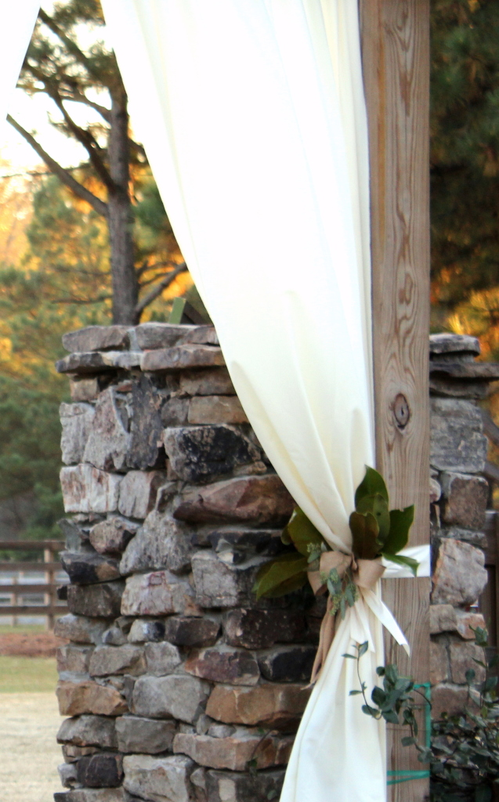
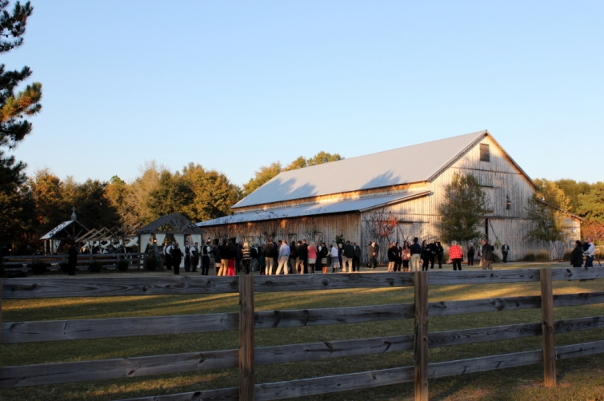

.png)
.PNG)
.PNG)
.PNG)
.PNG)
.PNG)
.JPG)
.JPG)
.PNG)
.PNG)


The ceremony was held outdoors in an area beside the barn at 5:00 (and it was rather chilly!)
Wedding gifts were cleverly displayed in a truck. (We would have both wanted that truck. Just make mine red please. 🙂 )
 The gorgeous barn doors were decorated with flowers.
The gorgeous barn doors were decorated with flowers.
If you had been with us, you might have recognized the frame of the chalkboard with the wedding party. It was my small contribution to the celebration.
The draped fabric on the newly constructed “arbor” was a wonderful touch.
I loved the detail of the magnolia leaves with the burlap ribbon bow holding the fabric in place.
The old wooden church pews were the perfect choice for seating for the ceremony.
This is where the bridal party stood with the pastor for the marriage vows.
One of my friends was the lovely mother of the bride (and I am not telling you how long ago I taught her now college-age son who was escorting her. 🙂 )
This very cold bridesmaid was one of the bride’s cousins and a sweet teacher with whom I work.
This junior bridesmaid did not seem concerned with being the least bit cold. She was still playing full force outside when we left well after dark.
And then it was time for the bride and her father to make their way over to the ceremony. You would have loved her dress.
Then you would have teared up like so many of us did when the bride’s tenderhearted father could not hold back his tears as he escorted his daughter down the aisle.
They managed to make it through the ceremony, and then we moved inside the warm barn for the reception.
The lighting made the space look magical.
The newlyweds made their way into the party,
and we all watched their first dance…
and the father-daughter dance.
After one or two more dances, it was time for the food.
There were a number of food stations – salads, fruits, roast beef, potato, and several others. This was the shrimp and grits station.
This one had tiny pecan pies, assorted cookies, and some cheese straws that I could have eaten by the pound! If you had been there with us, you would have liked them too. They were very delicious.
The wedding cake had white cake layers, chocolate cake layers, and a red velvet layer.
Very creative table displays were everywhere.
After eating, you would have wanted to stand by that gorgeous stone fireplace outside the barn. It would have been a good way to stay toasty on such a cold November night.
And you and I would have left thinking how grateful we were to be able to have been a part of such a beautiful celebration of love. It was a wedding that many friends and family members poured creative efforts into, and no detail was overlooked. I hope your Sunday is full of blessings and time with friends and family – all things to be thankful for as well.
Until next time…


.PNG)
Oh my…what an exquisite and most creative wedding….I so love everything about it from the truck with the gifts to the beautifully draped aisle and then there is that barn with those gorgeous chandeliers…The vintage church pews were such a great idea…the Bride and Groom are such a beautiful couple..and who could hold back tears when you see the photo of her dad….thanks for taking us along on this most wonderful wedding!
Beautiful wedding! Beautiful bride! Sometimes I wish I could go back and add some things to my daughter’s wedding. So many great ideas out there! It’s not supposed to be this cold yet! That fire place looked so warm and toasty!
I love weddings that are personal. This wedding seemed like it so reflected the couple. Both of our children were married here at our home, both very personal celebrations, that is what I love. Thanks for sharing…you are next!!
Kelly, Thanks for taking us along to this beautiful wedding. Wow!!! is about all I can say. My son will be getting married outside in April Easter weekend at Club Continental in Orange Park, Florida. I only hope that everything turns out as beautiful as this. Being in Virginia and them in Florida it is hard to plan things. I am holding the rehearsal dinner at The Winterbourne Inn on the St Johns at Orange Park, Florida. This was the first choice the bride wanted her wedding but wasn’t available so I figured the least I could do was have the rehearsal dinner there. I wish I could take you along to help me with decorating and calligraphy. I pray for beautiful weather. Thank you again for sharing the pics. They gave me some ideas. Send my best to the beautiful couple. Sincerely, Cindy
Kelly – your photos are so beautiful, I feel like I had a front row seat! Thank you for bringing us along.
Thanks for taking me along…beautiful wedding! Sure wished I could’ve tasted some of that food you described, though! 😉
Hi Kelly,
Thank you for sharing. That was beautiful! The father of the bride brought tears to my eyes….just lovely.
Sue
Kelly,
What a beautiful wedding. The barn was transformed into such a magical setting. It was fun seeing the food stations and all of the great touches. Thanks for sharing.
xo,
Karen
Stunning! Every detail was just beautiful.
Oh my gosh what a lovely wedding! Your photos are great…all the details! Love the lighting.
This is the barn wedding I wanted 20 yrs ago. But back then it wasn’t the norm. I’m sure the bride/groom loved your special touches you did for them. And I did get tears in my eyes at the father of the bride pic…it looks like it was a lovely weekend.
It was a beautiful wedding. Great pictures Kelly.
P. S. Taking a second look at your post and just wanting to say, maybe you should submit your beautiful pictures to the websites of Weddingbee or Project Wedding. You took wonderful pictures. Have you thought of besides teaching, blogging, sign making, sewing, etc…you might add wedding photographer to your repertoire? You captured this Wedding share wonderfully. 🙂
Oh stop! This is just gorgeous! Unfortunately, in our more semi rural area outside of Chicago, we do not have a venue such as this, but we have a venue called Heritage Farm. It is a stones throw away from our home, but they need to enhance the property such as this. I agree on your thought of that vintage truck! Darn, I think I would take it in any color just about. While we’re at it, lets throw in a small vintage airstream camper since we are sharing our special “wish lists” 🙂 Thanks Kelly for that precious picture of poor Ol’ dad letting the tears flow. I want to know what the bride was thinking at that moment, don’t you? It is definitely those shared “human moments revealed” that can get even the attendees going too? Heck, after seeing this beautiful wedding, I want to do my 1975 wedding day over! The food looked amazing …thank you for at least the delicious share for my eyes…ugh wait, I’m hungry now..
Oh I just love wedding pictures!!! These are great! The way they did the lighting is awesome!! Thanks for sharing.
What a gorgeous wedding! LOVE the whole set up!
Oh Kelly what an absolutely gorgeous and beautiful wedding. Wow….the flowers were spectacular!!! Our daughtier was married 3 years ago and I know how much it all cost.. especially the flowers…but oh how they really create such a warm and joyful atmosphere…the price is so worth it!!! And the brides lace dress is simply stunning!! I even teared up when I saw the pic of her Daddy getting emotional as he escorted her down the aisle. I wish the special couple al the happiness in the world!! Thank you for sharing their fairytale day!! : )
Beautiful wedding and photos! The florals and tables are especially lovely. Looks like it was a wonderful evening!
Oh how beautiful! I’m partial to outdoor weddings/barn receptions because that’s what our younger son had in the mountains outside of Asheville. Though on a gorgeous day in June – sunny and cool (but not too cool for the bare shouldered bride and bridesmaids). Your chalkboard looks fantastic.
Kelly,
I really appreciate how you “took us along” to the wedding. It looks like it was a magical celebration. I loved your chalk board. The truck holding the presents would have had to be green for me but the rest is just perfect. Thanks for sharing with us. Since it is snowing here this weekend I have been working on getting our Christmas card photo taken. It looks like the weather is a bit more fallish there.
Oh, how fun! I just love seeing wedding photos!
Several of our “kids” in the family have been married at farm/barn venues – wonderful! My sons chose our backyard (see The Story of an Arbor on my blog) and the beach, also wonderful 🙂 Your friends wedding was magazine worthy gorgeous. Thanks for sharing!
Kelly, Wow, what an amazing wedding! I had to hold back tears when I saw the father of the bride. Thank you for sharing the beautiful pictures. Your contribution was beautiful also.
What a lovely wedding! The photos are great! Did you take them? The reception was so well done, sometimes big areas like that are hard to decorate….but they did a wonderful job of filling the space with the right scale of decorations. I love the trend toward less formal, yet still gorgeous receptions. I am always impressed when people pull off an outdoor ceremony. When my daughter got married we thought long and hard about having the actual wedding outside, but I knew I would have a nervous breakdown worrying about the weather so she opted for a quaint old church and her reception was in my best friend’s 150 year old home.
I almost forgot, your chalkboard is wonderful! Your script is beautiful…..I can’t seem to get the hang of doing the different fonts, you are very talented!
That is breath-takingly beautiful.
I love the way the inside of the barn is decked out, and the exterior for the ceremony is just perfect.
And I wish the lovely couple many, many years of happiness!
I really enjoyed the photos, what great place to have a wedding I especially like the one of her father, just beautiful. thanks
What a beautiful wedding! Thanks for sharing. A lovely way to start a Sunday.
Hi Kelly, Your photos really capture the feeling of the wedding. Thanks for sharing with us. I love the chalkboard you created. And what a lovely setting for a wedding!